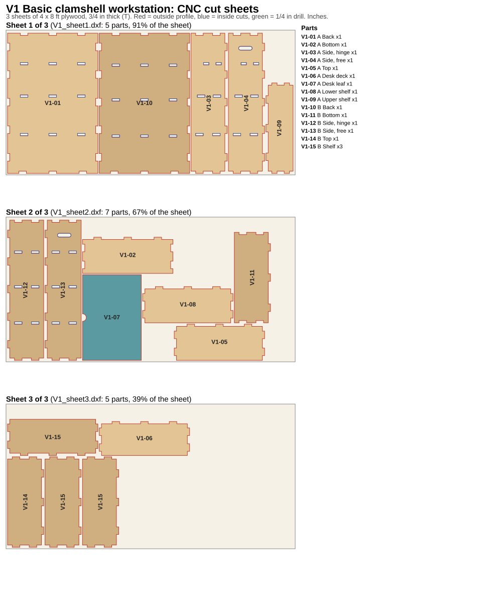
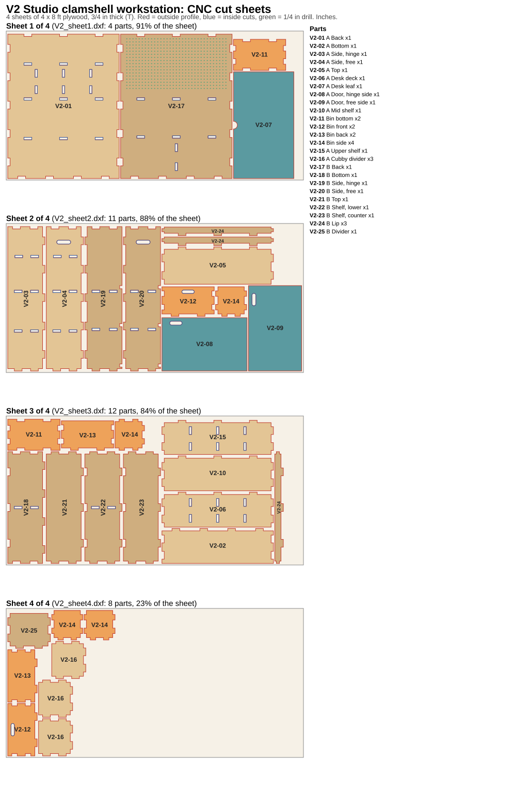
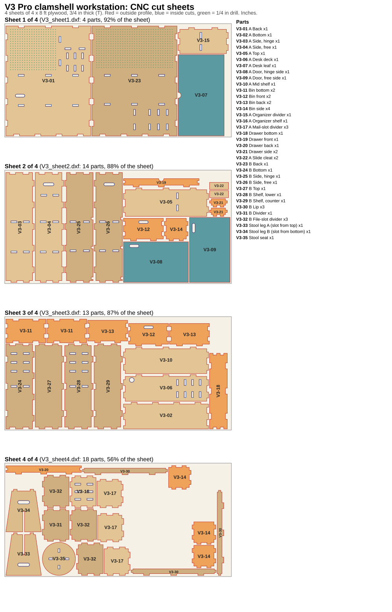

3/4 in plywood on 4 × 8 ft sheets · tab-and-slot joinery with dog-bones for a 1/4 in bit · DXF files (one per sheet) in clamshell_desk/cnc/
30 × 24 × 49½ in closed · 3 sheets · 17 parts
Two plain half-boxes on casters. The desk leaf folds down on folding stays; fixed shelves in both halves.

| ID | Part | Qty | Cut length (in) | Cut width (in) | Thickness (in) | Panel body (in) | Sheet(s) | Features |
|---|---|---|---|---|---|---|---|---|
| V1-01 | A Back | 1 | 46-1/2 | 30 | 3/4 | 46-1/2 x 30 | 1 | 16 edge notches; 9 through slots |
| V1-02 | A Bottom | 1 | 30 | 12 | 3/4 | 30 x 11-1/4 | 2 | 3 tabs; 4 edge notches |
| V1-03 | A Side, hinge | 1 | 46-1/2 | 12 | 3/4 | 45-3/4 x 11-1/4 | 1 | 7 tabs; 2 edge notches; 6 through slots |
| V1-04 | A Side, free | 1 | 46-1/2 | 12 | 3/4 | 45-3/4 x 11-1/4 | 1 | 7 tabs; 2 edge notches; 6 through slots; 1 hand/cable slots |
| V1-05 | A Top | 1 | 30 | 12 | 3/4 | 28-1/2 x 11-1/4 | 2 | 7 tabs |
| V1-06 | A Desk deck | 1 | 30 | 11-1/4 | 3/4 | 28-1/2 x 10-1/2 | 3 | 7 tabs |
| V1-07 | A Desk leaf | 1 | 28-3/8 | 19-1/2 | 3/4 | 28-3/8 x 19-1/2 | 2 | finger pull |
| V1-08 | A Lower shelf | 1 | 30 | 12 | 3/4 | 28-1/2 x 11-1/4 | 2 | 7 tabs |
| V1-09 | A Upper shelf | 1 | 30 | 9 | 3/4 | 28-1/2 x 8-1/4 | 1 | 7 tabs |
| V1-10 | B Back | 1 | 46-1/2 | 30 | 3/4 | 46-1/2 x 30 | 1 | 16 edge notches; 9 through slots |
| V1-11 | B Bottom | 1 | 30 | 12 | 3/4 | 30 x 11-1/4 | 2 | 3 tabs; 4 edge notches |
| V1-12 | B Side, hinge | 1 | 46-1/2 | 12 | 3/4 | 45-3/4 x 11-1/4 | 2 | 7 tabs; 2 edge notches; 6 through slots |
| V1-13 | B Side, free | 1 | 46-1/2 | 12 | 3/4 | 45-3/4 x 11-1/4 | 2 | 7 tabs; 2 edge notches; 6 through slots; 1 hand/cable slots |
| V1-14 | B Top | 1 | 30 | 12 | 3/4 | 28-1/2 x 11-1/4 | 3 | 7 tabs |
| V1-15 | B Shelf | 3 | 30 | 12 | 3/4 | 28-1/2 x 11-1/4 | 3 | 7 tabs |
| Item | Qty |
|---|---|
| Plate caster, 3 in overall, 100 lb+ each | 4 |
| Plate caster, locking | 4 |
| Continuous (piano) hinge 1-1/2 in, cut to 44-1/2 in | 1 |
| Continuous hinge 1-1/2 in, cut to 27-3/8 in (desk leaf) | 1 |
| Drop-lid stay / folding desk support, pair (50 lb+) | 1 |
| Draw latch (holds the box shut) | 2 |
| Barrel bolt or hook (holds B open) | 1 |
| Wood glue; #8 x 5/8 in pan-head screws for hardware | 1 |
36 × 24 × 49½ in closed · 4 sheets · 35 parts
The lower doors swing out to hold up the desk leaf. Adds cubbies, two pull-out bins, lipped shelves, a divider and a pegboard back in B.

| ID | Part | Qty | Cut length (in) | Cut width (in) | Thickness (in) | Panel body (in) | Sheet(s) | Features |
|---|---|---|---|---|---|---|---|---|
| V2-01 | A Back | 1 | 46-1/2 | 36 | 3/4 | 46-1/2 x 36 | 1 | 17 edge notches; 15 through slots |
| V2-02 | A Bottom | 1 | 36 | 11-1/4 | 3/4 | 36 x 10-1/2 | 3 | 4 tabs; 4 edge notches |
| V2-03 | A Side, hinge | 1 | 46-1/2 | 12 | 3/4 | 45-3/4 x 11-1/4 | 2 | 7 tabs; 2 edge notches; 6 through slots |
| V2-04 | A Side, free | 1 | 46-1/2 | 12 | 3/4 | 45-3/4 x 11-1/4 | 2 | 7 tabs; 2 edge notches; 6 through slots; 1 hand/cable slots |
| V2-05 | A Top | 1 | 36 | 12 | 3/4 | 34-1/2 x 11-1/4 | 2 | 7 tabs |
| V2-06 | A Desk deck | 1 | 36 | 11-1/4 | 3/4 | 34-1/2 x 10-1/2 | 3 | 7 tabs; 6 through slots |
| V2-07 | A Desk leaf | 1 | 34-3/8 | 19-1/2 | 3/4 | 34-3/8 x 19-1/2 | 1 | finger pull |
| V2-08 | A Door, hinge side | 1 | 27-1/2 | 17-1/8 | 3/4 | 27-1/2 x 17-1/8 | 2 | 1 hand/cable slots |
| V2-09 | A Door, free side | 1 | 27-1/2 | 17-1/8 | 3/4 | 27-1/2 x 17-1/8 | 2 | 1 hand/cable slots |
| V2-10 | A Mid shelf | 1 | 36 | 11-1/4 | 3/4 | 34-1/2 x 10-1/2 | 3 | 7 tabs |
| V2-11 | Bin bottom | 2 | 16-7/8 | 10 | 3/4 | 16-7/8 x 10 | 1 3 | 8 edge notches |
| V2-12 | Bin front | 2 | 16-7/8 | 9-1/2 | 3/4 | 16-7/8 x 8-3/4 | 2 4 | 2 tabs; 4 edge notches; 1 hand/cable slots |
| V2-13 | Bin back | 2 | 16-7/8 | 9-1/2 | 3/4 | 16-7/8 x 8-3/4 | 3 4 | 2 tabs; 4 edge notches |
| V2-14 | Bin side | 4 | 10 | 9-1/2 | 3/4 | 8-3/4 x 8-1/2 | 2 3 4 | 6 tabs |
| V2-15 | A Upper shelf | 1 | 36 | 11 | 3/4 | 34-1/2 x 10-1/4 | 3 | 7 tabs; 6 through slots |
| V2-16 | A Cubby divider | 3 | 12 | 11 | 3/4 | 10-1/2 x 10-1/4 | 4 | 6 tabs |
| V2-17 | B Back | 1 | 46-1/2 | 36 | 3/4 | 46-1/2 x 36 | 1 | 17 edge notches; 8 through slots; 561 pegboard holes |
| V2-18 | B Bottom | 1 | 36 | 12 | 3/4 | 36 x 11-1/4 | 3 | 4 tabs; 7 edge notches; 2 through slots |
| V2-19 | B Side, hinge | 1 | 46-1/2 | 12 | 3/4 | 45-3/4 x 11-1/4 | 2 | 7 tabs; 5 edge notches; 4 through slots |
| V2-20 | B Side, free | 1 | 46-1/2 | 12 | 3/4 | 45-3/4 x 11-1/4 | 2 | 7 tabs; 5 edge notches; 4 through slots; 1 hand/cable slots |
| V2-21 | B Top | 1 | 36 | 12 | 3/4 | 34-1/2 x 11-1/4 | 3 | 7 tabs |
| V2-22 | B Shelf, lower | 1 | 36 | 12 | 3/4 | 34-1/2 x 11-1/4 | 3 | 7 tabs; 3 edge notches; 2 through slots |
| V2-23 | B Shelf, counter | 1 | 36 | 12 | 3/4 | 34-1/2 x 11-1/4 | 3 | 7 tabs; 3 edge notches |
| V2-24 | B Lip | 3 | 36 | 2-3/4 | 3/4 | 34-1/2 x 2 | 2 3 | 5 tabs |
| V2-25 | B Divider | 1 | 13-3/4 | 11-1/4 | 3/4 | 12-1/4 x 10-1/2 | 4 | 6 tabs |
| Item | Qty |
|---|---|
| Plate caster, 3 in overall, 100 lb+ each | 4 |
| Plate caster, locking | 4 |
| Continuous (piano) hinge 1-1/2 in, cut to 44-1/2 in | 1 |
| Continuous hinge 1-1/2 in, cut to 33-3/8 in (desk leaf) | 1 |
| No-mortise or butt hinge 2-1/2 in (doors) | 4 |
| Magnetic catch (doors) | 2 |
| Screw-in leveling glide 1/2 in (door feet) | 2 |
| Draw latch (holds the box shut) | 2 |
| Barrel bolt or hook (holds B open) | 1 |
| Pegboard hook assortment, 1/4 in | 1 |
| Wood glue; #8 x 5/8 in screws for hardware | 1 |
36 × 24 × 49½ in closed · 4 sheets · 49 parts (stool included)
Everything in V2 plus a pencil drawer, a mail-slot organizer, a desk grommet and power bay, file slots, pegboard over the desk and a flat-pack stool.

| ID | Part | Qty | Cut length (in) | Cut width (in) | Thickness (in) | Panel body (in) | Sheet(s) | Features |
|---|---|---|---|---|---|---|---|---|
| V3-01 | A Back | 1 | 46-1/2 | 36 | 3/4 | 46-1/2 x 36 | 1 | 17 edge notches; 16 through slots; 1 hand/cable slots; 360 pegboard holes |
| V3-02 | A Bottom | 1 | 36 | 11-1/4 | 3/4 | 36 x 10-1/2 | 3 | 4 tabs; 4 edge notches |
| V3-03 | A Side, hinge | 1 | 46-1/2 | 12 | 3/4 | 45-3/4 x 11-1/4 | 2 | 7 tabs; 2 edge notches; 4 through slots |
| V3-04 | A Side, free | 1 | 46-1/2 | 12 | 3/4 | 45-3/4 x 11-1/4 | 2 | 7 tabs; 2 edge notches; 6 through slots; 1 hand/cable slots |
| V3-05 | A Top | 1 | 36 | 12 | 3/4 | 34-1/2 x 11-1/4 | 2 | 7 tabs; 2 through slots |
| V3-06 | A Desk deck | 1 | 36 | 11-1/4 | 3/4 | 34-1/2 x 10-1/2 | 3 | 7 tabs; 8 through slots; grommet hole |
| V3-07 | A Desk leaf | 1 | 34-3/8 | 19-1/2 | 3/4 | 34-3/8 x 19-1/2 | 1 | finger pull |
| V3-08 | A Door, hinge side | 1 | 27-1/2 | 17-1/8 | 3/4 | 27-1/2 x 17-1/8 | 2 | 1 hand/cable slots |
| V3-09 | A Door, free side | 1 | 27-1/2 | 17-1/8 | 3/4 | 27-1/2 x 17-1/8 | 2 | 1 hand/cable slots |
| V3-10 | A Mid shelf | 1 | 36 | 11-1/4 | 3/4 | 34-1/2 x 10-1/2 | 3 | 7 tabs |
| V3-11 | Bin bottom | 2 | 16-7/8 | 10 | 3/4 | 16-7/8 x 10 | 3 | 8 edge notches |
| V3-12 | Bin front | 2 | 16-7/8 | 9-1/2 | 3/4 | 16-7/8 x 8-3/4 | 2 3 | 2 tabs; 4 edge notches; 1 hand/cable slots |
| V3-13 | Bin back | 2 | 16-7/8 | 9-1/2 | 3/4 | 16-7/8 x 8-3/4 | 3 | 2 tabs; 4 edge notches |
| V3-14 | Bin side | 4 | 10 | 9-1/2 | 3/4 | 8-3/4 x 8-1/2 | 2 4 | 6 tabs |
| V3-15 | A Organizer divider | 1 | 21-1/4 | 11 | 3/4 | 19-3/4 x 10-1/4 | 1 | 6 tabs; 2 through slots |
| V3-16 | A Organizer shelf | 1 | 13-1/2 | 11 | 3/4 | 12 x 10-1/4 | 4 | 6 tabs; 6 through slots |
| V3-17 | A Mail-slot divider | 3 | 12 | 11 | 3/4 | 10-1/2 x 10-1/4 | 4 | 6 tabs |
| V3-18 | Drawer bottom | 1 | 32 | 7-1/2 | 3/4 | 32 x 7-1/2 | 3 | 10 edge notches |
| V3-19 | Drawer front | 1 | 32 | 3-1/2 | 3/4 | 32 x 2-3/4 | 2 | 3 tabs; 2 edge notches; finger pull |
| V3-20 | Drawer back | 1 | 32 | 3-1/2 | 3/4 | 32 x 2-3/4 | 4 | 3 tabs; 2 edge notches |
| V3-21 | Drawer side | 2 | 7-1/2 | 3-1/2 | 3/4 | 6 x 2-3/4 | 2 | 4 tabs |
| V3-22 | A Slide cleat | 2 | 8 | 3 | 3/4 | 8 x 3 | 2 | |
| V3-23 | B Back | 1 | 46-1/2 | 36 | 3/4 | 46-1/2 x 36 | 1 | 17 edge notches; 14 through slots; 561 pegboard holes |
| V3-24 | B Bottom | 1 | 36 | 12 | 3/4 | 36 x 11-1/4 | 3 | 4 tabs; 7 edge notches; 8 through slots |
| V3-25 | B Side, hinge | 1 | 46-1/2 | 12 | 3/4 | 45-3/4 x 11-1/4 | 2 | 7 tabs; 5 edge notches; 4 through slots |
| V3-26 | B Side, free | 1 | 46-1/2 | 12 | 3/4 | 45-3/4 x 11-1/4 | 2 | 7 tabs; 5 edge notches; 4 through slots; 1 hand/cable slots |
| V3-27 | B Top | 1 | 36 | 12 | 3/4 | 34-1/2 x 11-1/4 | 3 | 7 tabs |
| V3-28 | B Shelf, lower | 1 | 36 | 12 | 3/4 | 34-1/2 x 11-1/4 | 3 | 7 tabs; 3 edge notches; 8 through slots |
| V3-29 | B Shelf, counter | 1 | 36 | 12 | 3/4 | 34-1/2 x 11-1/4 | 3 | 7 tabs; 3 edge notches |
| V3-30 | B Lip | 3 | 36 | 2-3/4 | 3/4 | 34-1/2 x 2 | 4 | 5 tabs |
| V3-31 | B Divider | 1 | 13-3/4 | 11-1/4 | 3/4 | 12-1/4 x 10-1/2 | 4 | 6 tabs |
| V3-32 | B File-slot divider | 3 | 13-3/4 | 11-1/4 | 3/4 | 12-1/4 x 10-1/2 | 4 | 6 tabs |
| V3-33 | Stool leg A (slot from top) | 1 | 18 | 15 | 3/4 | 4 | ||
| V3-34 | Stool leg B (slot from bottom) | 1 | 18 | 15 | 3/4 | 4 | ||
| V3-35 | Stool seat | 1 | 14 | 14 | 3/4 | 4 |
| Item | Qty |
|---|---|
| Plate caster, 3 in overall, 100 lb+ each | 4 |
| Plate caster, locking | 4 |
| Continuous (piano) hinge 1-1/2 in, cut to 44-1/2 in | 1 |
| Continuous hinge 1-1/2 in, cut to 33-3/8 in (desk leaf) | 1 |
| No-mortise or butt hinge 2-1/2 in (doors) | 4 |
| Magnetic catch (doors) | 2 |
| Screw-in leveling glide 1/2 in (door feet) | 2 |
| Side-mount drawer slides 8 in, pair | 1 |
| Desk grommet 2 in | 1 |
| Power strip, flat plug, mounted in the power bay | 1 |
| Draw latch (holds the box shut) | 2 |
| Barrel bolt or hook (holds B open) | 1 |
| Pegboard hook assortment, 1/4 in | 1 |
| Wood glue; #8 x 5/8 in screws for hardware | 1 |